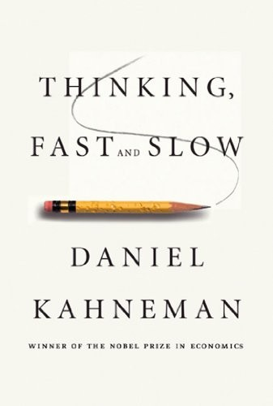

jplenio
jplenio
Good morning!
Nur das Schöne wird die Welt retten!
Fjodor Dostojewski
Nicht verzagen, Doc Alvers fragen!
Informatik — Künstliche Intelligenz
Die Begriffe, die 2026 zählen
Neuronales Netz · LLM · Token · Kontextfenster · Prompt · RAG · Agent
Nicht verzagen, Doc Alvers fragen!
Kapitel 01
Was darunter rechnet
Vom Neuron zum neuronalen Netz
Nicht verzagen, Doc Alvers fragen!
Bevor wir über Sprache reden
Hinter jedem KI-Werkzeug steckt ein künstliches neuronales Netz (KNN)
Vorbild ist das Gehirn — wir haben es nachgebaut in seiner essentiellen Funktion
Das Netz ist reine "Rechnerei": Zahlen hinein, Zahlen heraus"
Es wird nicht programmiert, sondern an Beispielen trainiert
Wer das verstanden hat, versteht alle folgenden Begriffe leichter
Nicht verzagen, Doc Alvers fragen!
Der kleinste Baustein: das Neuron (Perceptron)
Helligkeit
Kantenanteil
Rundung
b = Bias
Ausgabe
Jeder Eingang wird mit seinem Gewicht multipliziert, alles wird addiert — und die Aktivierung entscheidet, was hinten herauskommt.
Nicht verzagen, Doc Alvers fragen!
Was das Neuron tut
Jeder Eingang ist eine Zahl — Helligkeit, Lautstärke, ein Wortstück
Jeder Eingang hat ein Gewicht: wie stark er zählt
Das "Neuron" multipliziert und addiert hereinkommende "Zahlen"
Dies Summe wird weitergegeben an die anderen verbundenen "Neurone"
Ein einzelnes Neuron kann fast nichts. Viele zusammen sehr viel: Emergenz
Nicht verzagen, Doc Alvers fragen!
Viele Neuronen, in Schichten
EINGABE
was hineingeht
VERDECKT
Merkmale
VERDECKT
Merkmale
AUSGABE
die Antwort
Jede Linie ist ein Gewicht — eine Zahl. Lernen heißt: diese Zahlen verstellen.
Ein Sprachmodell hat davon Milliarden.
Nicht verzagen, Doc Alvers fragen!
Warum Schichten?
Die Eingabeschicht nimmt die Trainingsdaten, die Ausgabeschicht gibt das Ergebnis
Dazwischen liegen verdeckte Schichten — sie bauen Merkmale auf
Frühe Schichten erkennen Kanten, spätere z.B. Augen, noch spätere Gesichter
Deep Learning heißt nur: viele Schichten hintereinander das Netz hat
Jede Verbindung ist ein Gewicht — bei großen Modellen sind es Milliarden!
Nicht verzagen, Doc Alvers fragen!
So lernt ein Netz
BEISPIEL
ein Bild mit Lösung
VORHERSAGE
das Netz rät
FEHLER
wie weit daneben?
GEWICHTE
nachjustiert
und noch einmal — millionenfach
Niemand programmiert die Gewichte.
Sie werden aus Beispielen zurechtgerückt, bis der Fehler klein ist.
Nicht verzagen, Doc Alvers fragen!
Training in einem Satz
Das Netz "rät", vergleicht mit der Lösung und misst den Fehler
Dann werden alle Gewichte ein kleines Stück in die bessere Richtung gerückt
Das heißt Backpropagation — der Fehler läuft rückwärts durchs Netz
Millionenfach wiederholt, bis der Fehler klein bleibtgegen Null geht
Das Gelernte steckt danach ausschließlich in den Gewichten
Nicht verzagen, Doc Alvers fragen!
Vom Netz zum Sprachmodell
Ein Sprachmodell ist genau so ein Netz — nur sehr groß
Seine Eingabe ist Text, seine Ausgabe eine Wahrscheinlichkeit je Wortstück
Trainiert wurde es an einer Aufgabe: was kommt als Nächstes?
Alles, was wir gleich besprechen, sitzt auf diesem einen Prinzip
Nicht verzagen, Doc Alvers fragen!
Kapitel 02
Das Modell
Was da eigentlich rechnet
Nicht verzagen, Doc Alvers fragen!
LLM — Large Language Model
LLM = großes Sprachmodell, trainiert auf sehr viel Text
Seine einzige Aufgabe: das nächste Token vorhersagen
Kein Nachschlagewerk — das Gelernte steckt in Milliarden Gewichten
Generativ: es erzeugt Text, es sucht ihn nicht heraus
Gleiche Frage, andere Antwort — die Ausgabe wird "gewürfelt"
Nicht verzagen, Doc Alvers fragen!
Wortvorhersage — so lernt ein Sprachmodell
Nicht verzagen, Doc Alvers fragen!
Token — die Währung der Modelle
Token = das Textstück, mit dem gerechnet wird: Wort, Wortteil, Zeichen
Faustregel Deutsch: 1 Wort ≈ 1,5 bis 2 Token
Alles wird in Token gemessen: Eingabe, Ausgabe, Preis, Limit
„und“ ist ein Token, „Kontextfenster“ sind mehrere
Vor der Rechnung steht immer die Zerlegung — der Tokenizer
Nicht verzagen, Doc Alvers fragen!
Ein Satz, in Token zerlegt
Das
Kont
ext
fen
ster
ist
voll
.
„Das Kontextfenster ist voll.“
8 Token bei GPT-4 — ein langes Wort zerfällt, jedes Stück wird zu einer Zahl.
Genau diese Stücke werden gezählt, bezahlt und begrenzt.
Aus 26 Buchstaben gäbe es Stücke mit bis zu vier Zeichen — GPT-4 kennt 100.256.
Nicht verzagen, Doc Alvers fragen!
Wie viele Wörter hat Deutsch?
Duden, Stichwörter
151.000
deutscher Wortschatz, geschätzt
300.000–500.000
mit allen gebeugten Formen
Millionen
mit Zusammensetzungen
unbegrenzt
GPT-4: 100.256 Token
Ein Wörterbuch zählt Grundformen: „gehen“ steht einmal drin — nicht gehe, gehst, ging, gegangen.
Mit allen Formen sind es Millionen — und zusammensetzen kann man endlos: Kontextfenstergröße …
Duden 29. Auflage 2024 · Balken logarithmisch, eine Dekade je Schritt
Nicht verzagen, Doc Alvers fragen!
Das Kontextfenster
Kontextfenster = wie viel Text das Modell gleichzeitig sehen kann
Darin steckt alles: Systemanweisung, Verlauf, Anhänge, Antwort
Ist es voll, fällt Ältestes heraus — das Modell vergisst
Zwischen zwei Chats bleibt nichts: jeder Start ist bei null
Es ist ein Arbeitsspeicher, sozusagen das Kurzzeitgedächtnis
Nicht verzagen, Doc Alvers fragen!
Was im Fenster liegt
System-Anweisung
Rolle und Regeln
Verlauf
alles bisher Gesagte
Anhänge
Dateien, Fundstellen
Antwort
muss auch hineinpassen
KONTEXTFENSTER
… die ersten Sätze des Gesprächs
… die Datei von vorhin
Ist es voll, fällt das Älteste heraus — das Modell vergisst.
Nicht verzagen, Doc Alvers fragen!
Wie groß Fenster geworden sind
| Jahr | typisches Fenster | entspricht etwa |
|---|---|---|
| 2020 | 2 000 Token | 3 Seiten |
| 2022 | 4 000 Token | 6 Seiten |
| 2023 | 128 000 Token | ein Buch |
| 2026 | 200 000 bis 1 000 000 Token | ein ganzes Regal |
Größer ist nicht automatisch besser: die Mitte wird schlechter beachtet
Und jedes Token im Fenster kostet — bei jeder einzelnen Anfrage neu
Nicht verzagen, Doc Alvers fragen!
Halluzination
Halluzination = das Modell erfindet etwas, das plausibel klingt
Ursache: es sagt das wahrscheinlichste Wort voraus, nicht das wahre
Es hat keine „weiß ich nicht“-Taste — Zuversicht ist kein Wahrheitsmaß
Typische Opfer: Quellen, Zitate, Zahlen, Paragraphen
Gegenmittel: Beleg mitgeben und nachprüfen — nie umgekehrt

Nicht verzagen, Doc Alvers fragen!
Kapitel 03
Reden mit dem Modell
Prompt und Kontext
Nicht verzagen, Doc Alvers fragen!
Prompt
Prompt = die Anweisung an das Modell
Der Prompt ist das Programm — nur in natürlicher Sprache geschrieben
System-Prompt: Rolle und Regeln, gilt für das ganze Gespräch
User-Prompt: die konkrete Aufgabe
Gleiche Aufgabe, anderer Prompt = anderes Ergebnis
Nicht verzagen, Doc Alvers fragen!
Prompt Engineering
| Technik | Idee | Beispiel |
|---|---|---|
| Rolle setzen | Fachperspektive erzwingen | „Du bist Fachlehrer für Informatik“ |
| Beispiele zeigen | Muster statt Erklärung | zwei gelöste Fälle voranstellen |
| Schritt für Schritt | Zwischenschritte sichtbar machen | „Rechne den Weg vor“ |
| Format vorgeben | Ausgabe wird weiterverwertbar | „Antworte als Tabelle“ |
| Abgrenzen | ausschließen, was stört | „Keine Einleitung“ |
Prompt Engineering = die Kunst, die Anweisung präzise zu formulieren
Nicht verzagen, Doc Alvers fragen!
Context Engineering
Context Engineering = das ganze Kontextfenster bewusst füllen
Nicht nur der Satz zählt, sondern Daten, Werkzeuge, Verlauf, Regeln
Leitfrage: Was muss im Fenster stehen, damit die Aufgabe lösbar ist?
Und ebenso wichtig: Was muss raus — Ballast kostet und lenkt ab
Der Begriff hat Prompt Engineering seit 2025 weitgehend abgelöst
Nicht verzagen, Doc Alvers fragen!
Zwei Begriffe, ein Unterschied
Prompt Engineering
die einzelne Anweisung
Frage: Wie formuliere ich?
Handwerk am Satz
reicht für ein Gespräch
Context Engineering
das gesamte Fenster
Frage: Was weiß es gerade?
Architektur der Information
nötig, sobald Agenten arbeiten
Nicht verzagen, Doc Alvers fragen!
RAG — nachschlagen statt raten
RAG = Retrieval-Augmented Generation: erst suchen, dann antworten
Die Fundstellen wandern in den Prompt — das Modell liest sie dort
Antwort kommt aus mitgeliefertem Text, nicht aus dem Gedächtnis
Vorteil: aktuell, prüfbar, mit Quelle
Technisch: Texte werden zu Embeddings, gesucht wird nach Ähnlichkeit
Nicht verzagen, Doc Alvers fragen!
RAG von vorn bis hinten
FRAGE
was du wissen willst
SUCHE
im eigenen Bestand
FUNDSTELLEN
in den Prompt
ANTWORT
aus dem Gelesenen
Dokumente · Skripte · Netz
Die Antwort steht nicht im Gedächtnis des Modells, sondern im mitgelieferten Text.
Darum ist sie aktuell — und man kann nachschlagen, woher sie kommt.
Nicht verzagen, Doc Alvers fragen!
Kapitel 04
Agenten
Wenn das Modell handeln darf
Nicht verzagen, Doc Alvers fragen!
Werkzeuge — Tool Use
Tool Use (Function Calling) = das Modell darf Werkzeuge aufrufen
Es schreibt nicht die Antwort, sondern den Aufruf
Das Programm führt aus, das Ergebnis geht zurück ins Kontextfenster
So kann es rechnen, suchen, Dateien lesen, Mails schreiben
MCP = offener Standard, über den Werkzeuge sich anmelden (seit 2024)
Nicht verzagen, Doc Alvers fragen!
Agent
Agent = Modell + Werkzeuge + Schleife + Ziel
Sie planen, handen, prüfen das Ergebnis, korrigieen — bis die Aufgabe erfüllt ist
Unterschied zum Chat: mehrere Schritte ohne Rückfrage
Der Mensch setzt das Ziel und die Grenzen, nicht jeden einzelnen Schritt
„Finde den Fehler und behebe ihn“ statt „Zeig mir Zeile 40“
Nicht verzagen, Doc Alvers fragen!
Die Schleife, die einen Agenten ausmacht
PLANEN
was ist der nächste Schritt?
HANDELN
ein Werkzeug aufrufen
ERGEBNIS
zurück ins Kontextfenster
PRÜFEN
Ziel erreicht — oder weiter?
DIE SCHLEIFE
läuft ohne Rückfrage
Der Mensch setzt Ziel und Grenzen — die Reihenfolge der Schritte bestimmt das Modell.
Nicht verzagen, Doc Alvers fragen!
agentisch — vier Stufen
| Stufe | wer entscheidet den nächsten Schritt | Beispiel |
|---|---|---|
| Chat | der Mensch, jedes Mal | Frage → Antwort |
| Workflow | das Programm, fester Ablauf | Text → Übersetzung → Mail |
| Agent | das Modell, im gesetzten Rahmen | „Bau die Auswertung“ |
| Multi-Agent | ein Agent verteilt an Agenten | Rechercheteam |
agentisch heißt: die Reihenfolge steht nicht vorher fest
Genau das macht es mächtig — und schwer prüfbar
Nicht verzagen, Doc Alvers fragen!
Was dabei schiefgeht
Fehler multiplizieren sich über viele Schritte
Jeder Schritt ist ein neuer Prompt — die Kosten wachsen mit
Das Risiko sind die Berechtigungen, nicht das Modell
Deshalb: Human in the Loop an den teuren Stellen
Prüfbar bleibt nur, was protokolliert und verschüsselt wird
Nicht verzagen, Doc Alvers fragen!
Kapitel 05
Zum Nachschlagen
Alles auf einer Folie
Nicht verzagen, Doc Alvers fragen!
Glossar
| Begriff | in einem Satz |
|---|---|
| Neuron | rechnet Eingänge mal Gewichte zusammen (Synapse oder Neuron) |
| Gewicht | eine Zahl — sie sagt, wie stark ein Eingang zählt (Dentrit oder Axon) |
| Künstlices Neuronales Netz (KNN) | viele Neuronen in Schichten |
| Training | die Gewichte aus Beispielen "zurechtrücken" (Backpropagation) |
| Deep Learning (DL) | Lernen mit vielen Schichten |
| LLM | Sprachmodell, das das nächste Token vorhersagt (Large Language Model) |
| Token | Textstück, mit dem gerechnet und abgerechnet wird |
| Kontextfenster | wie viel Text (Token) werden gleichzeitig verwendet |
| Prompt | die Anweisung an das Modell |
| Prompt Engineering | die Anweisung präzise formulieren |
| Context Engineering | das ganze Fenster bewusst füllen |
| RAG | erst suchen, dann aus dem Fund antworten (Retrival Augmented G###) |
| Embedding | Text als Zahlenvektor, vergleichbar gemacht |
| Tool Use | das Modell ruft Werkzeuge auf |
| MCP | Standard, über den Werkzeuge sich anmelden (Model Context Protocol) |
| Agent | Modell mit Werkzeugen, Schleife und Ziel |
| agentisch | die Reihenfolge steht nicht vorher fest (EN agentic) |
Nicht verzagen, Doc Alvers fragen!
Ein Sprachmodell weiß nichts — es kennt nur, was gerade in seinem Fenster steht. Wer das Fenster füllt, bestimmt die Antwort.
Merksatz
Nicht verzagen, Doc Alvers fragen!